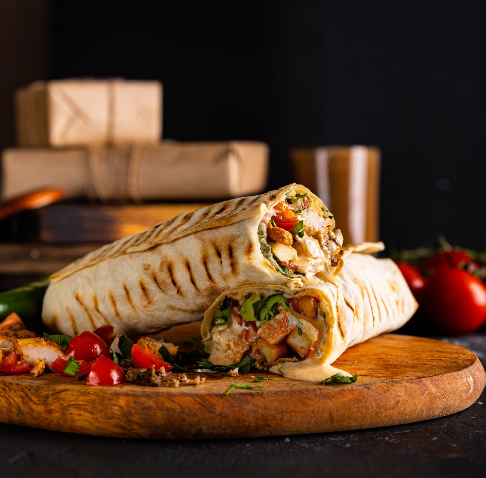

Библия шаурмы
Шаурма. Навечно.

Наш магазин шаурмы - $$$$
- шаурма классическая (200 руб.)
- - лаваш курица салат томато огурец кетчунез
- шаурма веганская (150 руб.)
- - лаваш веганская курица салат томато огурец кетчунез
Как делать шаурму в домашних условиях?
Лаваш, курица, томато, огурец, майонез
- Обжарьте курицу, чтобы была корочка
- Нарежьте оугрец и томато
- Намажьте лаваш майонезом и наложите туда курицу, огурец и томато
- Обжарьте сверток на сковородке, чтобы было сочно и с корочкой
- Кайфуйте от свежей шаурмак
данёк 2007
t.me/madeinheaven91
шаурмак 2024-2024 (С)